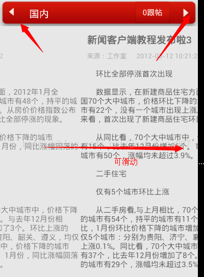

高仿新闻教程—新闻内容UI的优化（5）
这一节主要是对于，提高用户体验，在新闻内容的直接进行点击或者滑动切换上一条新闻和上一条新闻

这个时候就需要学习一个新的知识点 ，可以为我们准备好数据 为用户进行下一条新闻的浏览
| ViewFlipper是继承至FrameLayout的，所以它是一个Layout里面可以放置多个View。ViewFlipper可以用来指定FrameLayout内多个View之间的切换效果，可以一次指定也可以每次切换的时候都指定单独的效果。该类额外提供了如下几个函数： isFlipping：用来判断View切换是否正在进行 setFilpInterval：设置View之间切换的时间间隔 startFlipping：使用上面设置的时间间隔来开始切换所有的View，切换会循环进行 stopFlipping: 停止View切换 |
我们把原来的线性布局用ViewFlipper
<ViewFlipper android:id="@+id/news_body_flipper" android:layout_width="fill_parent" android:layout_height="fill_parent" android:background="@drawable/main_background" android:layout_marginTop="-12.0dip" android:layout_marginBottom="40.0dip" android:layout_below="@id/newsdetails_titlebar_layout" />
线性布局 在代码中添加进ViewFlipper
具体思路：先实例化 ViewFlipper LayoutInflater 还要定义两个参数 一个是开始滑动的点 和结束的点 来判断是否滑动表并出发下一条新闻。
2. 然后给两个button添加点击事件
Button newsDetailsTitlebarPre = (Button)findViewById(R.id.newsdetails_titlebar_previous); NewsDetailsTitleBarOnClickListener newsDetailsTitleBarOnClickListener = new NewsDetailsTitleBarOnClickListener(); newsDetailsTitlebarPre.setOnClickListener(newsDetailsTitleBarOnClickListener); Button newsDetailsTitlebarNext = (Button)findViewById(R.id.newsdetails_titlebar_next); newsDetailsTitlebarNext.setOnClickListener(newsDetailsTitleBarOnClickListener);
3. 将线性布局添加进ViewFlipper 并且实例化 其中的组件
mNewsBodyInflater = getLayoutInflater();
//动态创建新闻视图
View newsBodyLayout = mNewsBodyInflater.inflate(R.layout.news_body, null);
TextView newsTitle = (TextView)newsBodyLayout.findViewById(R.id.news_body_title);
newsTitle.setText("新闻客户端教程发布啦");
TextView newsPtimeAndSource = (TextView)newsBodyLayout.findViewById(R.id.news_body_ptime_source);
newsPtimeAndSource.setText("来源：工作室 2012-03-12 10:21:22");
TextView newsDetails = (TextView)newsBodyLayout.findViewById(R.id.news_body_details);
newsDetails.setText(Html.fromHtml(NEWS));
//把新闻视图添加到Flipper中
mNewsBodyFlipper = (ViewFlipper)findViewById(R.id.news_body_flipper);
mNewsBodyFlipper.addView(newsBodyLayout);4.//给新闻Body添加触摸事件
newsDetails.setOnTouchListener(new NewsBodyOnTouchListener());
全部代码——————
package com.example.SundayNews;
import android.app.Activity;
import android.os.Bundle;
import android.text.Html;
import android.view.LayoutInflater;
import android.view.MotionEvent;
import android.view.View;
import android.view.View.OnClickListener;
import android.view.View.OnTouchListener;
import android.widget.Button;
import android.widget.TextView;
import android.widget.ViewFlipper;
public class NewsDetailsActivity extends Activity
{
private ViewFlipper mNewsBodyFlipper;
private LayoutInflater mNewsBodyInflater;
private float mStartX;
private int mCount;
@Override
public void onCreate(Bundle savedInstanceState)
{
super.onCreate(savedInstanceState);
setContentView(R.layout.newsdetails);
//给TitleBar中的Button设置OnClickListener
Button newsDetailsTitlebarPre = (Button)findViewById(R.id.newsdetails_titlebar_previous);
NewsDetailsTitleBarOnClickListener newsDetailsTitleBarOnClickListener = new NewsDetailsTitleBarOnClickListener();
newsDetailsTitlebarPre.setOnClickListener(newsDetailsTitleBarOnClickListener);
Button newsDetailsTitlebarNext = (Button)findViewById(R.id.newsdetails_titlebar_next);
newsDetailsTitlebarNext.setOnClickListener(newsDetailsTitleBarOnClickListener);
mNewsBodyInflater = getLayoutInflater();
//动态创建新闻视图
View newsBodyLayout = mNewsBodyInflater.inflate(R.layout.news_body, null);
TextView newsTitle = (TextView)newsBodyLayout.findViewById(R.id.news_body_title);
newsTitle.setText("新闻客户端教程发布啦");
TextView newsPtimeAndSource = (TextView)newsBodyLayout.findViewById(R.id.news_body_ptime_source);
newsPtimeAndSource.setText("来源：工作室 2012-03-12 10:21:22");
TextView newsDetails = (TextView)newsBodyLayout.findViewById(R.id.news_body_details);
newsDetails.setText(Html.fromHtml(NEWS));
//把新闻视图添加到Flipper中
mNewsBodyFlipper = (ViewFlipper)findViewById(R.id.news_body_flipper);
mNewsBodyFlipper.addView(newsBodyLayout);
//给新闻Body添加触摸事件
newsDetails.setOnTouchListener(new NewsBodyOnTouchListener());
}
/**
* 处理NewsDetailsTitleBar点击事件
*/
class NewsDetailsTitleBarOnClickListener implements OnClickListener
{
@Override
public void onClick(View v)
{
switch (v.getId())
{
//上一条新闻
case R.id.newsdetails_titlebar_previous:
showPrevious();
break;
//下一条新闻
case R.id.newsdetails_titlebar_next:
showNext();
default:
break;
}
}
}
/**
* 处理新闻NewsBody触摸事件
*/
class NewsBodyOnTouchListener implements OnTouchListener
{
@Override
public boolean onTouch(View v, MotionEvent event)
{
switch (event.getAction())
{
//手指按下
case MotionEvent.ACTION_DOWN:
//记录起始坐标
mStartX = event.getX();
break;
//手指抬起
case MotionEvent.ACTION_UP:
//往左滑动
if (event.getX() < mStartX)
{
showNext();
}
//往右滑动
else if (event.getX() > mStartX)
{
showPrevious();
}
break;
}
return true;
}
}
/**
* 显示下一条新闻
*/
private void showNext()
{
//设置下一屏动画
mNewsBodyFlipper.setInAnimation(this, R.anim.push_left_in);
mNewsBodyFlipper.setOutAnimation(this, R.anim.push_left_out);
//动态创建新闻视图
mCount++;
//由于每一次放到Flipper中的视图是不同的对象，因此必须重新new一个newsBodyLayout
View newsBodyLayout = mNewsBodyInflater.inflate(R.layout.news_body, null);
TextView newsTitle = (TextView)newsBodyLayout.findViewById(R.id.news_body_title);
newsTitle.setText("新闻客户端教程发布啦"+mCount);
TextView newsPtimeAndSource = (TextView)newsBodyLayout.findViewById(R.id.news_body_ptime_source);
newsPtimeAndSource.setText("来源：工作室 2012-03-12 10:21:22");
TextView newsDetails = (TextView)newsBodyLayout.findViewById(R.id.news_body_details);
newsDetails.setText(Html.fromHtml(NEWS));
//添加触摸时间
newsDetails.setOnTouchListener(new NewsBodyOnTouchListener());
mNewsBodyFlipper.addView(newsBodyLayout);
//显示下一屏
mNewsBodyFlipper.showNext();
}
private void showPrevious()
{
//设置上一屏动画
mNewsBodyFlipper.setInAnimation(this, R.anim.push_right_in);// 定义下一页进来时的动画
mNewsBodyFlipper.setOutAnimation(this, R.anim.push_right_out);// 定义当前页出去的动画
//显示上一屏
mNewsBodyFlipper.showPrevious();
}
public final String NEWS = "<p> 环比全部停涨首次出现</p>\r\n<p> 数据显示，在新建商品住宅方面，2012年1月全国70个大中城市，价格环比下降的城市有48个，持平的城市有22个，没有一个城市出现上涨。从房价价格指数公布来看，首次出现了新建商品住宅环比全部停涨的现象。</p>\r\n<p> 从同比看，70个大中城市中，价格下降的城市有15个，比去年12月份增加6个。1月份，同比涨幅回落的城市有50个，涨幅均未超过3.9%。</p>\r\n<p> 二手住宅</p>\r\n<p> 仅有5个城市环比上涨</p>\r\n<p> 从二手房看,与上月相比，70个大中城市中，价格下降的城市有54个，持平的城市有11个。与去年12月份相比，1月份环比价格下降的城市增加了3个。环比上涨的仅5个城市：分别为贵阳、济宁、襄阳、韶关、遵义，均仅上涨0.1%。同比看，70个大中城市中，价格下降的城市有37个，比去年12月份增加了8个。1月份，同比涨幅回落的城市有29个，涨幅均未超过3.5%。</p>\r\n<p> 北京情况</p>\r\n<p> 二手房环比同比均下跌</p>\r\n<p> 数据显示，北京二手房价格不管是环比还是同比，都在下跌，且下跌幅度均有所加大。</p>\r\n<p> 在环比方面，自去年8月份出现停涨后，二手房价格环比开始下跌，且此后每个月的下跌幅度在不断加大，到2012年1月份，其环比下跌幅度已达到0.9%。而在同比方面，2012年1月份下跌3.1%，创下最大跌幅。</p>\r\n<p> 北京新建住宅价格指数2010年5月时同比涨幅为22%，而到了2012年1月同比涨幅仅为0.1%。新建商品房价格指数同比涨幅也是连续下跌，下降幅度也比较大，去年年底同比涨幅为1.3%，而到了今年1月份，则同比涨幅下跌为0.1%。在环比方面，继2011年10月首次出现下跌后，环比继续下跌为0.1%。</p>\r\n<p> ■ 分析</p>\r\n<p> 北京房价调控成效明显</p>\r\n<p> 北京中原地产市场总监张大伟认为，北京作为限购执行最严格的城市，房价调控已经见到明显成效。限购导致的直接需求减少，限购抑制投资、投机，在北京出台的最严格版限购下，5年外地户籍限购年限使得购房者回归自住，本地需求占据9成，自住首套占据9成，全市最近一年成交量中投资及投机基本绝迹。</p>\r\n<p> 同时，买卖双方博弈加剧，限购限贷使得购房者期待价格下调，但是投资手段匮乏、通货膨胀依然是阻碍价格下滑的关键因素。特别是城区部分二手房房主依然坚挺价格，惜售，这使得在价格依然居高不下的情况下，购房者入市谨慎。</p>\r\n<p> ■ 预测</p>\r\n<p> 今年房价或下调10%-20%</p>\r\n<p> 张大伟认为，2012年限购政策不会放松，一线城市楼市拐点已经明确，预期在6-12个月内房价可能还有10%-20%的下调，而且一线城市对全国的示范作用非常大，不仅在政策执行力度上，在房价下调过程中也会明显影响全国。</p>\r\n<p> 链家地产市场研究部冯联联认为，在楼市调控效果继续巩固的背景下，降价趋势仍会持续。1月份全国多个城市新房市场成交跌入谷底，观望情绪依旧浓重，为加速销售回款，将不断有开发商加入降价换量阵营，新房价格预期会进一步下调。</p>";
}
因为我们没有内容，所以只有做下假数据，因为 ViewFlipper自带下一条新闻 和上一条 我们只要调用方法，
关于触摸事件的处理，也就判断开始点和结束点的距离 一旦大于就调用 点击事件里的 下一条新闻 OR 上一条新闻